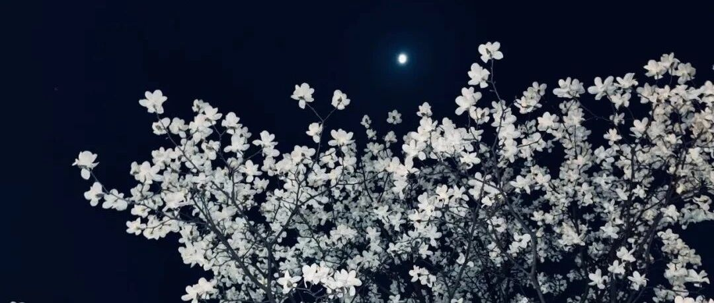

随笔 | 春夜杂记
原创
籽言
籽言
寻常
2022年03月13日 21:54
在小说阅读器中沉浸阅读
"躲进小楼成一统，管他冬夏与春秋"
——《自嘲》，鲁迅
疫情就像海边的潮汐，刚退下去，又呼啦啦涌了上来，一波接一波，似乎永远不会停息。有时候我觉得自己很安全，因为打过三针疫苗，因为可以居家办公，因为国家花了大力气在“
动态清零
”。有时候又觉得很惶恐，
因为看到了“动态清零”的政治正确之下一幕幕非理性的、甚至荒诞的人间乱象，因为不知道这样看似轰轰烈烈，实则劳民伤财的“内耗”还要持续多久，又还能持续多久。
人类的悲喜本就不相通，对我个人来讲，事情却在朝着好的方向发展。从设计公司离开以后，工作节奏正常了很多，六点下班，周末双休，带来的改变是惊人的。我每天可以7点起床锻炼，吃好早饭，精力充沛地工作一整天，晚上回家或看书或学编程，日日都有新收获。十点多困了，就安心上床睡觉。
周末去学瑜伽，跟多年未见的高中同桌约饭，跟我的Marido去公园草地上露营晒太阳。这些都是自己下定决心改变之前未曾想到的。
没有任何一份工作会比健康的身体，幸福的生活，丰富的灵魂，长远的发展更重要，这是我付出巨大代价之后才逐渐明白的。
新年一过我就给自己定下了几条生活原则，尽最大努力去执行，收效颇佳：
1、不要久坐，不要久坐，不要久坐
2、除非有明确目的否则不看手机，不以微信和B站打发时间
3、11点前睡觉，7点起床吃早饭。
4、不要急于表达，要学会倾听
5、先学习新知识，再开始工作
6、认真洗脚
虽然都是老生常谈，没什么新鲜的，但做到以后回过头看，每一条都很有意义。
有人会说，现在疫情这么严重，国家面临如此大的挑战，你却只关心自己这些鸡毛小事。
我不这么认为。
一九一四年八月二日，卡夫卡在日记里写道：“
德国对俄国宣战。——下午游泳”
。
我曾经也不理解，一个写出《审判》、《变形记》等伟大著作，对人性、对人类命运如此敏感的伟大作家，会把一战开始这样的时代惊雷和下午游泳这样的微末小事等量齐观。后来才慢慢懂得，越是面对大的浩劫，越应该保持常态，外界越乱，心里就越要稳。
面对疫情不必如惊弓之鸟，做好该做的防护措施，吃好饭，睡好觉，锻炼身体，集中精力去学习和成长才是长远之道。每个人都各司其职，各安其事，社会才能好。如果日日都去关注四面八方海量的新闻，荒疏了专业，乱了心神，等到抗疫全面结束的那一天，除了感慨，你又能留下什么呢……
八年抗战，危亡之际，国家都要花大代价将学生迁往内地，组成联大继续读书，因为我们都知道，战争终究会结束，在那之后，能够带领我们从苦难走向辉煌的，是知识，是人才，是留得青山在。
鲁迅有首小诗名为《自嘲》，里面有两句非常出名“
横眉冷对千夫指，俯首甘为孺子牛
”，后面还有两句更能表达我当下的心境：“
躲进小楼成一统，管他冬夏与春秋
”。鲁迅写这两句不是失望，不是虚无，更不是自私，而是对自己该做什么不该做什么的笃定与坚持。我也是取这个意思。
上海的春夜微风和煦，玉兰盛开，极美。花点时间整理一下之前记录的乱七八糟的感想，下周继续努力工作，好好生活。希望每个人都平平安安。
2022年3月13日
完笔于上海
修改于